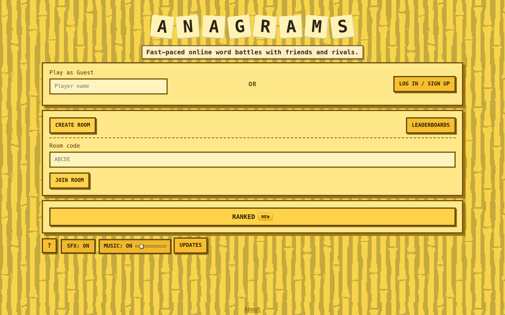
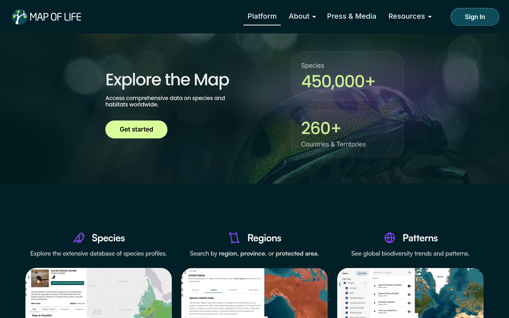
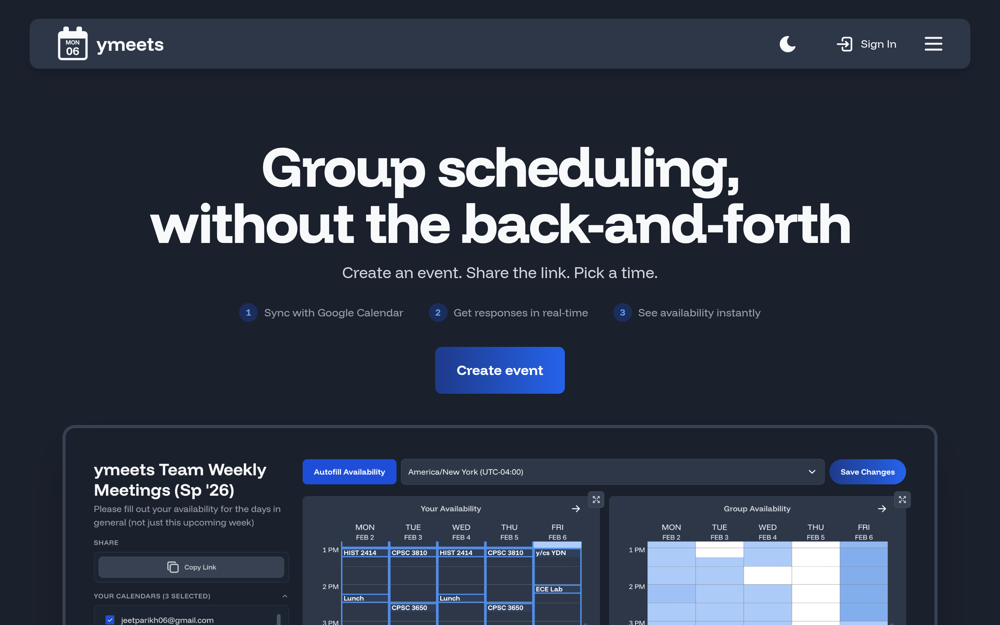

Full-stack multiplayer word game built from concept to production — real-time gameplay, ELO matchmaking, server-side anticheat, and hand-drawn visual/audio assets. 5,000+ multiplayer matches and counting.

playanagrams.com
TypeScriptReactNode.jsWebSockets
Fullstack Lead for Yale's official hackathon. Built the website and participant portal on React and Firebase, attracting 1,000+ hackers and multiple industry sponsors with a $10,000+ prize pool annually.
ReactFirebaseTypeScriptFigma
Novel method for synthesizing rim lesions on QSM images to solve data imbalance in MS detection. ResNet18 trained on synthetic data outperforms state-of-the-art QSMRim-Net. First-author publication in progress.
PyTorchNumPySciPyMATLAB
Report generation system for species distribution models on mol.org, enabling ecologists to visualize model performance and track species migration across seasons.

mol.org
RSQLPythonREST APIs
Meeting scheduling application for Yale students and faculty, built with React, MongoDB, and AWS.

ymeets.com
ReactTypeScriptMongoDBAWS
Worked on the computer vision team designing and testing deep learning methods for medical image segmentation. Built a 3D U-Net model from scratch for liver lesion segmentation on CT scans.

PythonPyTorchNumPy